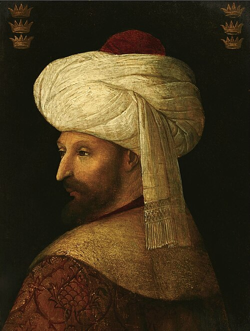
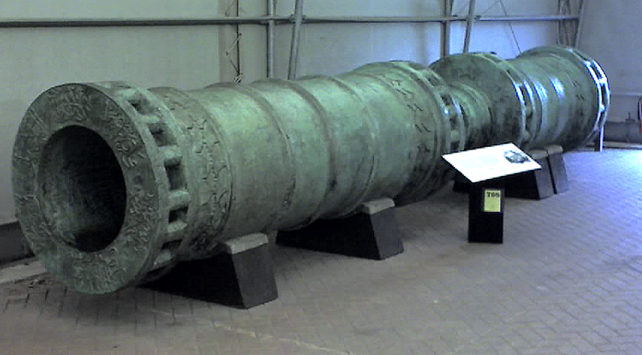

Sultan Mehmed II: The Conqueror of Empires

WHO IS SULTAN MUHAMMAD II ?
Sultan Mehmed II, known as Mehmed the Conqueror (Fatih Sultan Mehmed), was one of the
most brilliant leaders in Islamic and world history. He changed the course of history by
conquering Constantinople at the young age of 21, effectively ending the Middle Ages .
Profile & Character Traits
Mehmed II was a unique combination of a fierce warrior and a highly educated intellectual.
- Multilingual: He spoke at least six languages, including Arabic, Persian, Greek, and Latin, allowing him to read Western and Eastern philosophy.
- Scientific Mind: He had a deep passion for mathematics and engineering, which he used to design his own massive cannons.
- Strategic Visionary: He possessed incredible patience and long-term planning skills, visible in his preparation for the Great Siege.
- Justice-Oriented Despite his strength, he was known for being fair to his subjects, regardless of their religion.
The Conquest of Constantinople (Entry into History)
For centuries, Constantinople was considered an "impregnable" city. In 1453, Mehmed II achieved what many before him had failed to do
- The Siege: He surrounded the city for 53 days with an army of 80,000 men and a massive fleet.
- Moving Ships Overland: In a legendary move, when he couldn't enter the Golden Horn by sea, he ordered his fleet to be dragged over greased logs across the hills of Galata.
- The Great Cannon (Urbans Cannon): The Great Cannon (Urbans Cannon):

Major Achievements
- Administrative Modernization: He organized the Ottoman government and issued the "Kanunname," the first unified code of laws for the empire
- He conquered most of the Balkans, including Serbia, Bosnia, and Albania, expanding Ottoman influence deep into Europe
- Intellectual Revolution:He turned Istanbul into a global center for science and art, building the "Sahn-ı Seman" Medrese (university).
- Religious Freedom: After the conquest, he issued a famous decree protecting the rights of Christians, proving his religious tolerance